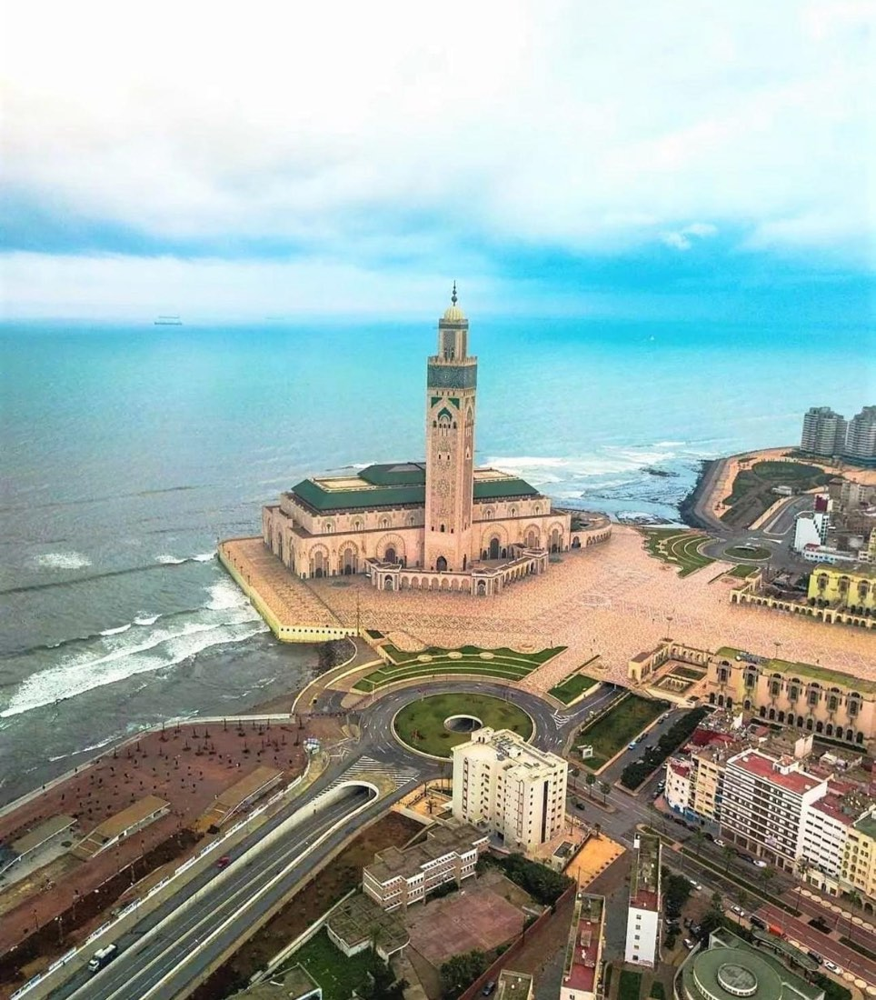
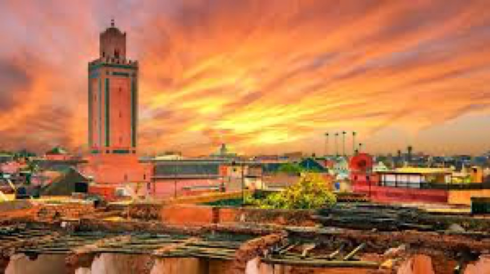

FasGüncelFas ve İspanya Endülüs Turu
Marakeş, Kazablanka, Rabat, Tanca, Tarifa, Sevilla, Kurtuba (Cordoba), Gırnata (Granada), Malaga
kişi başı€1.890'dan
İncele →
Şehir etiketine dokunun; programın o günü açılsın.
| İki Kişilik Odada Kişi Başı (erken rezervasyon) | €1.750 |
|---|---|
| Tek Kişilik Oda (erken rezervasyon) | €2.250 |
| İlave Yatak (erken rezervasyon) | €1.750 |
| 0 - 1 Yaş | €250 |
|---|---|
| 2 - 5 Yaş | €1.650 |
| 6 - 11 Yaş | €1.700 |
* Erken rezervasyon fiyatıdır; erken rezervasyon koşulları için bize ulaşın.
* Fiyatlar kişi başı, EUR; tüm yurt dışı yerel vergiler dahildir.
* 5 gece / 6 gün.
* Ekstra tur ödemesi yoktur.
İstanbul Havalimanı Dış Hatlar Terminali Giden Yolcu Salonu "THY" bankosunda saat 08.45'te buluşuyoruz. Güvenlik, check-in ve pasaport işlemleri sonrası THY'nin TK617 seferi ile 11.45'te Kazablanka'ya hareket ediyoruz (5 sa). Varış: 14.50. (Uçuş saatleri havayoluna bağlı olarak değişebilir.) Varışta Kazablanka şehir turumuzda 2. Hasan Camisi, Anfa Semti ve Atlas Okyanusu kenarında yer alan Corniche görülecek yerler arasındadır. Akşam yemeği sonrası konaklama otelimizde. 5* Kenzi Tower Hotel vb.
Otelde alacağımız kahvaltının ardından Rabat'a hareket ediyoruz (90 km). Varışta (açıksa) Kraliyet Sarayı Bahçesi, 5. Muhammed Türbesi, Hasan Kulesi ve Şehir Surları'nı ziyaret sonrası Tanca'ya hareket ediyoruz (245 km). Tanca'ya varışımızın ardından 14. yüzyılın en büyük seyyahlarından kabul edilen İbn Battûta'nın kabrini ziyaret sonrası Medina eski şehri geziyoruz. Akşam yemeği sonrası konaklama otelimizde. 5* Ryad Mogador Hotel vb.
Otelde alacağımız kahvaltının ardından evlerde, sokaklarda, merdivenlerde ve duvarlarda mavi rengin ve tonlarının hâkim olması sebebiyle "Mavi Elbiseli Şehir" olarak anılan, dar sokakları ve otantik evleri ile tanınan Şafşavan'a hareket ediyoruz (110 km). Şafşavan turumuzda Uta-El Hamam Meydanı, 15. yy.'da inşa edilen Şafşavan Büyük Camisi, Medina (eski şehir) ve Fransız mimari örneklerini bulabileceğimiz 5. Muhammed Meydanı başlıca görülecek yerler arasındadır. Rif Dağları'nın eteklerine kurulmuş olan bu şehirde merdivenli sokaklar, otantik evler, küçük avlular ve el işçiliğinin güzel örnekleri görülebilir. Turumuzun ardından Fes şehrine hareket ediyoruz (215 km). Akşam yemeği sonrası konaklama otelimizde. 4* Barcelo Fes Medina Hotel vb.
Otelde alacağımız kahvaltının ardından yapacağımız Fes Medina (eski şehir) turunda Attarine Medresesi, Eski Karaouine Üniversitesi, Nejarine Meydanı, Bakırcılar Meydanı, Fas'a özel takıların, bakır ve süs eşyalarının satıldığı Zanaatkârlar Çarşısı ve Fes Irmağı yakınlarında kurulmuş olup bugün aynı tekniklerle derilerin işlendiği Tarihi Tabakhane görülecek yerler arasındadır. Gezimizin ardından Marakeş'e hareket ediyoruz (505 km). Akşam yemeği sonrası konaklama otelimizde. 5* Grand Mogador Menara Hotel vb.
Otelde alacağımız kahvaltının ardından yapacağımız Marakeş şehir turumuzda zeytin ağaçlarıyla çevrili Menara Bahçeleri, Bahia Sarayı, medina (eski şehir), Şifa-i Şerif kitabının yazarı Kadı İyaz, Delâilü'l Hayrat kitabının yazarı Süleyman El-Cezûlî ve Kitab-ül İbriz'in yazarı Abdülaziz Debbağ hazretlerinin kabirlerinden açık olanlarını ve Berberi Eczanesi olarak bilinen, Argan Yağı ve Fas'a ait diğer bitkisel ürünleri alabileceğiniz aktar ziyareti sonrası 800 yıllık Koutoubia Minaresi ve Camisi ile UNESCO listesinde yer alan Jemaa El Fna Meydanı (Kıyamet Meydanı) görülecek yerler arasındadır. Meddahlar, hokkabaz ve cambazların gösterileri ile şenlenen Jemaa El Fna için kısaca "açık hava tiyatrosu" diyebiliriz. Meydanın arka sokaklarındaki çarşıda el sanatlarının pek çok örneğini bulmak mümkündür. Gezimizin ardından Fas kültürünü yakından göreceğimiz Chez Ali Show'da akşam yemeği, folklor ve atlı şov programını izleme sonrası konaklama otelimizde.
Chez Ali Fantasia Show akşam yemeği menüsü: Harira Çorbası, Kuzu Tandır, Yedi Sebzeli Tavuklu Kuskus, Mevsim Meyveleri, Kurabiye, Nane Çayı.
Önemli: Chez Ali Show programında atlı akrobasi ve çeşitli sahne gösterileri sunulmaktadır.
Otelde alacağımız kahvaltının ardından serbest zaman sonrası Majorelle Bahçesi'ni ziyaretimizi müteakip Marakeş Havalimanı'na hareket ediyoruz. Check-in ve pasaport işlemlerini müteakip THY'nin TK620 seferi ile 16.15'te İstanbul'a uçuyoruz. Varış: 23.20. (Uçuş saatleri havayoluna bağlı olarak değişebilir.)

FasGüncel FasGüncel
FasGüncel